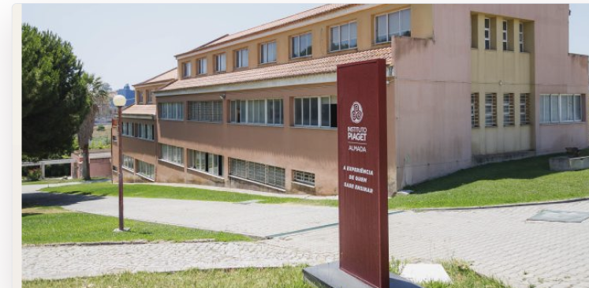

Campus de Almada
Acolhimento simples para novos estudantes
Uma plataforma clara para orientar estudantes, visitantes e famílias nos primeiros contactos com o campus, os serviços, os espaços e a vida académica.
O campus
Informação essencial num único lugar
Chegar ao campus
Transportes, acessos, estacionamento e entrada principal explicados de forma direta.
Encontrar espaços
Biblioteca, secretaria, salas, cantina e zonas de estudo organizadas por necessidade.
Resolver dúvidas
Contactos úteis, perguntas frequentes e processos académicos com linguagem simples.
Mapa funcional
Orientação visual para o primeiro dia
O mapa do campus ajuda a perceber onde deve ir primeiro, reduzindo a ansiedade inicial e evitando pesquisa dispersa.
- Entrada principal e receção
- Secretaria e serviços académicos
- Biblioteca, salas e zonas de estudo
- Cantina, espaços sociais e acessibilidade
Bloco A
Bloco B
Bloco C
Bloco D
Bloco E
Bloco F
Bloco G
Bloco H
Jardim
Primeiro dia
Checklist de chegada ao campus
Uma área prática para reduzir dúvidas antes da primeira visita e orientar o estudante desde a entrada no campus até ao acesso às plataformas digitais.
Antes de chegar
- Confirmar horário e sala.
- Levar documento de identificação.
- Guardar contactos da secretaria.
Ao chegar
- Entrar pela receção principal.
- Confirmar localização da sala.
- Identificar biblioteca e zonas de estudo.
Depois da receção
- Ativar email institucional.
- Aceder ao Portal do Estudante.
- Consultar eventos de acolhimento.
Serviços
Acesso rápido ao que o estudante precisa
Secretaria
Matrículas, certificados, horários, pagamentos e documentos académicos.
Ver contactoBiblioteca
Pesquisa, estudo, reservas, apoio documental e recursos digitais.
Ver horárioApoio ao estudante
Integração, necessidades especiais, acompanhamento e encaminhamento.
Pedir apoioVida académica
Eventos, atividades, núcleos, sessões de acolhimento e oportunidades.
Ver eventosCursos em Almada
Oferta organizada por área
A página de cursos ajuda candidatos e novos estudantes a perceberem rapidamente que áreas existem no Campus de Almada.
Escola Superior de Educação
Formação orientada para educação, intervenção, comunidade e práticas pedagógicas.
Escola Superior de Saúde
Cursos ligados à saúde, bem-estar, terapias e acompanhamento de pessoas.
Tecnologias e Gestão
Formação em áreas digitais, gestão, dados, desenvolvimento e inovação.
Formação técnica superior
Percursos práticos com foco na entrada rápida no mercado de trabalho.
Guia do estudante
Fluxo pensado para quem chega pela primeira vez
A página guia organiza os passos de entrada no campus desde a preparação antes da visita até ao acompanhamento depois do primeiro contacto.
Antes de chegar
Consultar transportes, documentos necessários, horários e localização.
No campus
Passar pela receção, confirmar serviços e localizar salas principais.
Depois da receção
Aceder aos links úteis, plataformas digitais e contactos de apoio.
Links úteis
Acessos importantes reunidos num só local
Em vez de obrigar o estudante a procurar em várias páginas, o website concentra os acessos usados com mais frequência.
FAQ
Perguntas frequentes
A FAQ responde às dúvidas mais comuns e reduz pedidos repetidos aos serviços.
O primeiro ponto deve ser a receção ou secretaria, onde podes confirmar sala, horário e serviços disponíveis.
Depois da inscrição, confirma os dados de acesso junto da secretaria ou consulta o Portal do Estudante.
Os horários são comunicados pelos serviços académicos e devem ser confirmados no portal institucional.
Sim. A receção e os serviços de apoio encaminham pedidos sobre integração, documentação e adaptação ao campus.
Usa os contactos abaixo para falar com a secretaria, pedir apoio ou confirmar a localização dos serviços.
Contactos
Ajuda clara, sem pesquisa longa
A secção de contactos reúne canais principais e um formulário simples para pedidos de informação, apoio ou encaminhamento.